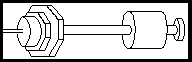
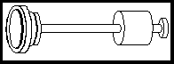
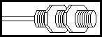

Ref - Sensors - Fluid Level
Purpose
This document provides reference information for all level sensors contained in a DxI. The document is intended to provide a source of cross-reference information.
Fluid Level Sensors
- Three different types of fluid level sensors are in the DxI.
- The total quantity of fluid level sensors is six.
- All are available in CARES.
- Part numbers shown are the instrument manufacturing part numbers.
- Refer to the DxI Parts List for availability.
- The Hall Effect sensor is used in more than one location and is interchangeable.
Note: The Hall Effect sensor is included in the fluid level sense category because the sensor is used to determine volume of fluid (by weight).
| Where Used | Description | Graphic | Mfg Part Number | Qty | Notes |
|---|---|---|---|---|---|
| Intermediate Waste Container -Fluid Level in | Mfg. - SENSOR, LEVEL, WASTE, LIQ, INTERM.
STS - Sensor, Level, Waste, Liquid Intermediate |
 |
01-010643-3 | 1 | Float type, 12-in lead |
| Buffer Reservoir Level | Mfg. - SENSOR, LEVEL, FLUIDICS MANIFOLD
Sensor, Level, Fluidics Manifold |
 |
B37881 | 1 | Float type, 18-in lead |
| Liquid Waste Container Volume (two)
Buffer Supply Container Volume (two) |
Sensor, Hall Effect, Analog |
 |
09-012298-2 | 4 | Inductive type (uses magnet), 24-in lead |